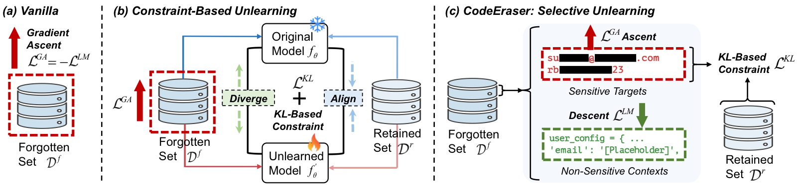

Scrub It Out! Erasing Sensitive Memorization in Code Language Models via Machine Unlearning
IEEE ICSE 2026

Abstract
While Code Language Models (CLMs) have demonstrated superior performance in software engineering tasks such as code generation and summarization, recent empirical studies reveal a critical privacy vulnerability: these models exhibit unintended memorization of sensitive training data, enabling verbatim reproduction of confidential information when specifically prompted. To address this issue, several approaches, including training data de-duplication and differential privacy augmentation, have been proposed. However, these methods require full-model retraining for deployed CLMs, which incurs substantial computational costs. In this paper, we aim to answer the following research question: Can sensitive information memorized by CLMs be erased effectively and efficiently? We conduct a pioneering investigation into erasing sensitive memorization in CLMs through machine unlearning, a post-hoc modification method that removes specific information from trained models without requiring full retraining. Specifically, we first quantify the memorization risks of sensitive data within CLM training datasets and curate a high-risk dataset of 50,000 sensitive memorized samples as unlearning targets. We study two widely used gradient ascent-based unlearning approaches: the vanilla and constraint-based methods, and introduce CodeEraser, an advanced variant that selectively unlearns sensitive memorized segments in code while preserving the structural integrity and functional correctness of the surrounding code. Extensive experiments on three families of CLMs, i.e., CodeParrot, CodeGen-Mono, and Qwen2.5-Coder, validate the effectiveness and efficiency of CodeEraser in erasing targeted sensitive memorization while maintaining model utility.
Resources
Citation
@inproceedings{CWZW26,
author = {Zhaoyang Chu and Yao Wan and Zhikun Zhang and Di Wang and Zhou Yang and Hongyu Zhang and Pan Zhou and Xuanhua Shi and Hai Jin and David Lo},
title = {{Scrub It Out! Erasing Sensitive Memorization in Code Language Models via Machine Unlearning}},
booktitle = {{ICSE}},
publisher = {IEEE},
year = {2026},
}